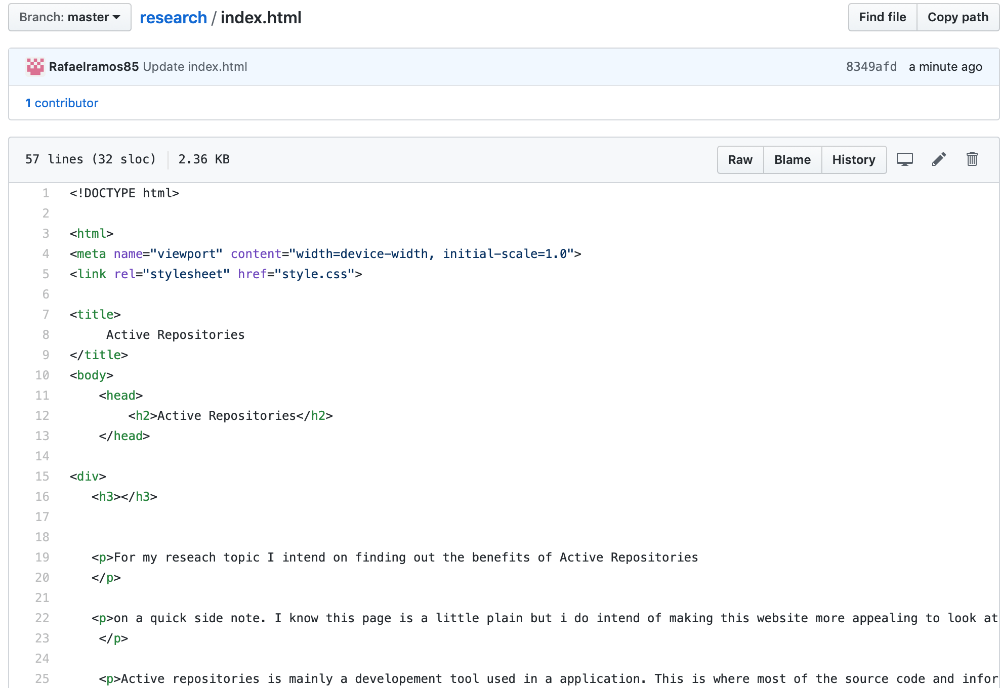

For my reseach topic I intend on finding out the benefits of Active Repositories
on a quick side note. I know this page is a little plain but i do intend of making this website more appealing to look at.and also i do plan on tinkering to make an actual repositiory eventually.
Active repositories is mainly a developement tool used in a application. This is where most of the source code and information can be stored. But! it is only to compile the app programs. this repository allows for the information to be reused when compiling. also it is a passive repository.
The purpose of a repository is a central file location.
For example GitHub is a repository. you are able to have one area where miltiple different files are store and can be munipulated to what even needs you have. For example for this website, I have a file names Index.html and another calles style.css. each file does something different but are both linked in the same repository which allows them to work together. Using a repository helps many different people or teams with coding because it leaves everything in one nice area that is easy to access.
If we look at repositories through examples, like I had stated earlier, GitHub is a great site to use as an example. Because of the fact that literally Github is just a big repository. If you look at the picture i have provided above you can see that in one main repository names research we have different file which all do its own job but allow for easy access to anything pertaining to this research project.
If we look into the index.html file we can see that this file contains the main code that shows in the website. But notice how it doesnt have any CSS code. That is because in the same repository we have the other file style.css that have all the css code needed to style the webpage.